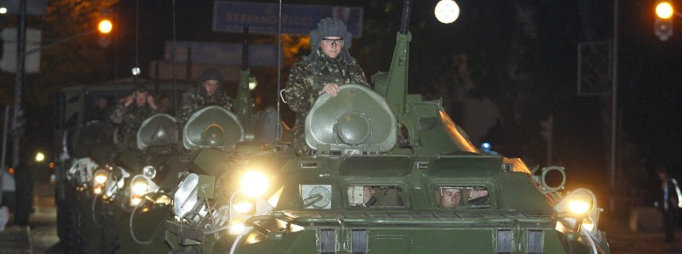

Ukraine nimmt Spion fest 1
Er soll beim Spionieren ertappt worden sein: Die ukrainische Regierung hat den russischen Militärattaché in Kiew festgenommen. Der Diplomat muss sofort das Land verlassen. Mehr...
Kiew - Die ukrainische Regierung hat den russischen Militärattaché in Kiew festnehmen lassen und unter dem Vorwurf der Spionage zur Persona non grata erklärt. Das teilte das Außenministerium in Kiew am Mittwochabend in einer Presseerklärung mit. Der Militärattaché, dessen Name nicht genannt wurde, sei "auf frischer Tat" ertappt worden, hieß es ohne nähere Einzelheiten.